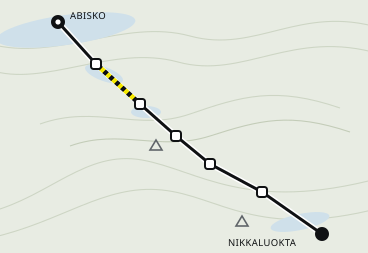

Plan status
Everything fits.
Route

© Kartverket · Lantmäterietblå / medium · röd / krevende on the pass
What you need
Days
- Getting there · Sun 16 Augnight train 94 · Stockholm C → Abisko
- 1 · Abisko → Abiskojaure14 km · ~4 h 30 · Abiskojaure fjällstuga
- 2 · Abiskojaure → Alesjaure22 km · ~7 h · Alesjaure fjällstuga
- 3 · Alesjaure → Tjäktja13 km · ~4 h 30 · Tjäktja — walk-in onlyby 18:00
- 4 · Tjäktja → Sälka12 km · pass 1,150 m · Sälka fjällstuga
- 5 · Sälka → Kebnekaise26 km · ~8 h · Kebnekaise fjällstation
- 6 · Kebnekaise → Nikkaluokta19 km · ~5 h
- Getting back · Sat 22 Augbus 91 Nikkaluokta → Kiruna · train 92